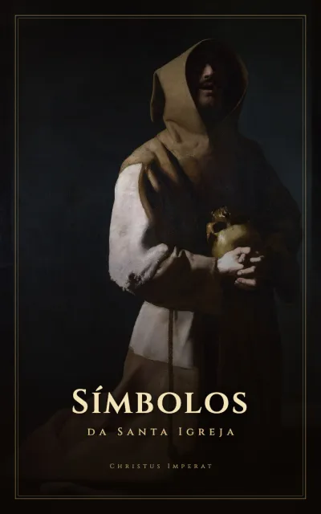
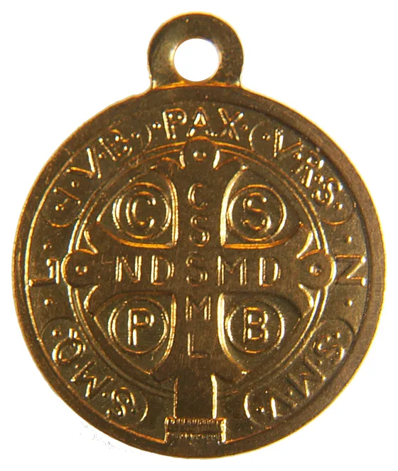
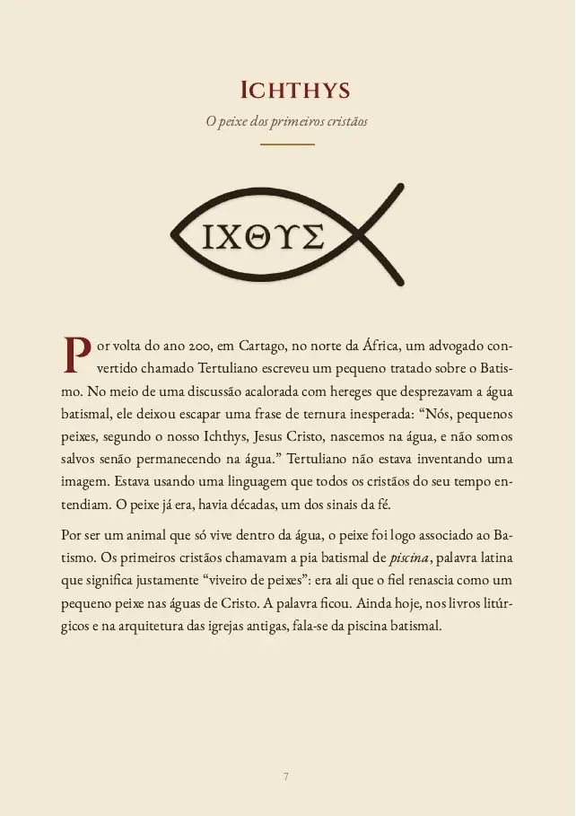
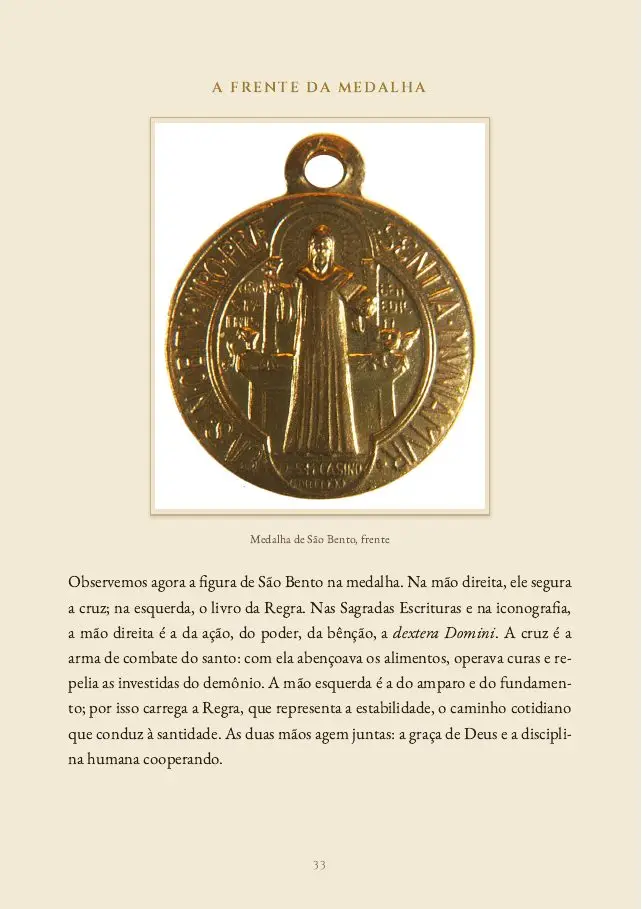
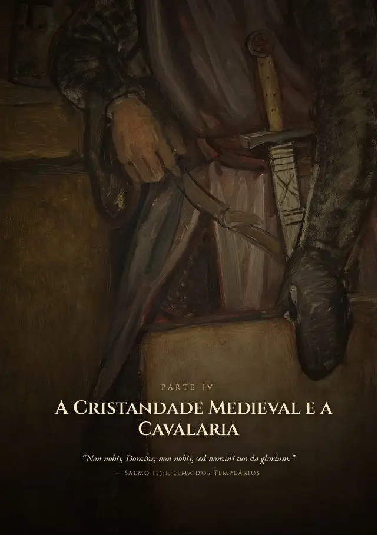
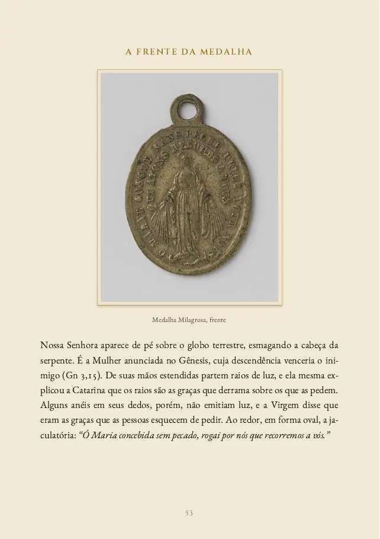
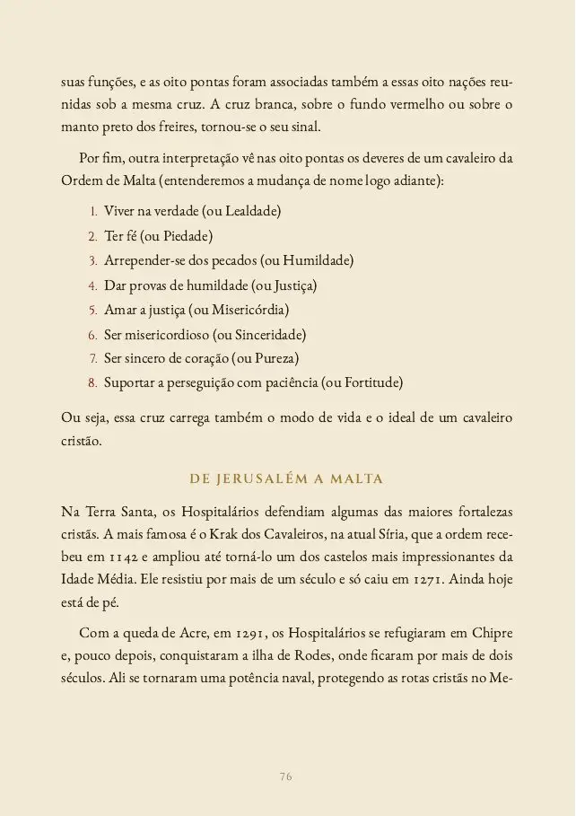
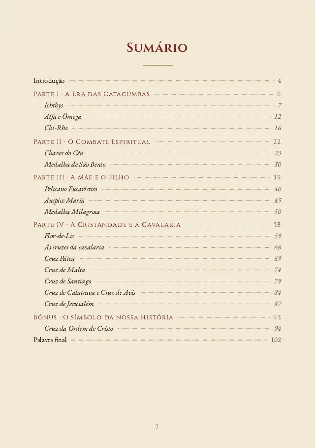
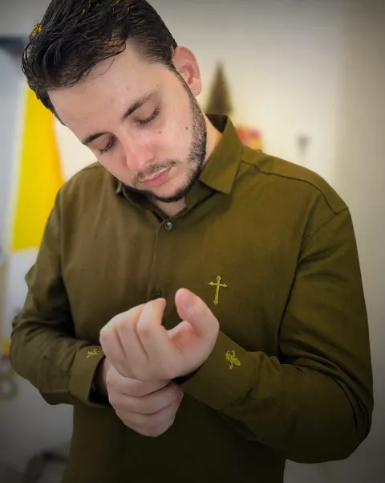

CHRISTUS IMPERAT
Entre numa igreja e saiba ler o que está nos altares, nos vitrais e no sacrário. Este e-book explica a história e o significado de 15 símbolos católicos e um capítulo bônus, do peixe das catacumbas às cruzes dos cavaleiros.

R$ 10pagamento único
Quero o e-book7 dias de garantia
Eles estão no sacrário da sua paróquia, na medalha que a sua avó deu, no vitral, na casula do padre, na bandeira de um clube de futebol. A gente se acostuma a vê-los e quase nunca pergunta de onde vieram.
O peixe era uma profissão de fé escondida, numa época em que ser cristão podia custar a vida. O pelicano ferido no alto do retábulo fala da Eucaristia. As cruzes dos cavaleiros carregam a história de homens que deixaram tudo para servir.
Este livro explica cada um desses símbolos com calma: de onde veio, o que a Escritura e a tradição da Igreja dizem sobre ele e o que ele tem a ver com a vida de um católico hoje.
Depois da leitura, a visita a uma igreja muda. O olhar sobe até o retábulo, para no sacrário, procura as letras gravadas no Círio. A igreja continua bonita como sempre foi, mas agora você entende o que ela está dizendo.
E a resposta para a pergunta lá de cima.

No centro, a cruz: o Sacrifício de Cristo é a origem da nossa salvação. Nos quatro cantos, as letras C S P B: Crux Sancti Patris Benedicti, “Cruz do Santo Pai Bento”. Nas hastes da cruz, o início da oração de São Bento:
| C S S M L | Crux Sacra Sit Mihi Lux A Santa Cruz seja a minha luz |
| N D S M D | Non Draco Sit Mihi Dux Não seja o dragão o meu guia |
Repare na construção. A primeira linha é uma súplica, a segunda é uma renúncia. É o mesmo movimento das promessas do Batismo, quando a Igreja pergunta primeiro se renunciamos a Satanás e depois se cremos em Deus. Na borda, vem o restante da oração:
| V R S | Vade Retro Satana Afasta-te, Satanás |
| N S M V | Nunquam Suade Mihi Vana Nunca me aconselhes coisas vãs |
| S M Q L | Sunt Mala Quae Libas É mau o que me ofereces |
| I V B | Ipse Venena Bibas Bebe tu mesmo o teu veneno |
As primeiras palavras ecoam o próprio Cristo, que repreende o tentador com um Vade retro, Satana (Mc 8,33). Com a tentação não se negocia. O cristão não discute com o demônio, não testa os seus limites, não pede para ver um pouco mais. Despacha-o com a autoridade de Cristo e volta os olhos para a cruz.
PÁGINA 35 · PARTE II, O COMBATE ESPIRITUAL
PARTE I
PARTE II
PARTE III
PARTE IV
BÔNUS






Arraste para o lado para ver mais páginas. São mais de 20 obras de arte sacra ao longo do livro, de Rubens a Caravaggio.

André Soler é o criador do Christus Imperat, perfil no Instagram sobre símbolos, história e humor católico, acompanhado hoje por mais de 16 mil pessoas.
Este livro nasceu de um post com nove símbolos católicos, que se tornou um dos mais curtidos do perfil. Nos comentários, muita gente perguntou pelos símbolos que tinham ficado de fora e queria saber mais sobre cada um. Este e-book é a resposta a esses pedidos.
“Tô pagando Instagram Premium??? Excelente conteúdo”
Vinicius, no post dos nove símbolos · 311 curtidas
“Eu e meu marido fizemos nosso brasão familiar pro casamento com esse lindíssimo monograma mariano 🙏”
uma seguidora, no post sobre o monograma mariano · 105 curtidas
“O mais bonito é a cruz da ordem de São Bento de Avis que não tá aí”
Igor, no post dos nove símbolos
“Mas e Calatrava? Avis? Santo Sepulcro?”
Pedro, no post sobre as ordens de cavalaria
A Cruz de Avis e a de Calatrava estão no livro.
Talvez você esteja pensando
Não precisa ler de uma vez. Cada símbolo é um capítulo independente, que se lê em dez ou quinze minutos. Dá para começar pelo seu preferido e seguir na ordem que quiser.
Provavelmente você conhece o básico. O livro vai além: o epitáfio de Abércio, um bispo do século II que falou do peixe em versos enigmáticos; por que as pontas da Cruz de Malta são oito; e como uma cruz florida, nascida numa fortaleza espanhola, acabou ligada à dinastia que chegou ao Brasil.
O texto se apoia na Sagrada Escritura, nos Padres da Igreja, nos hinos da liturgia e nos documentos históricos. Datas e fatos foram conferidos. Quando uma explicação é tradição piedosa e não fato comprovado, o livro diz isso claramente.
É um PDF, mas montado como livro: 106 páginas, com tipografia clássica, pinturas em boa resolução e um desenho de cada símbolo. Abre no celular, no tablet e no computador, e pode ser impresso.
Você tem 7 dias de garantia. Se achar que não valeu, é só pedir o reembolso pela própria plataforma e recebe o valor integral, sem precisar explicar o motivo.
pagamento único, no Pix ou no cartão
Você recebe o acesso por e-mail logo após o pagamento.
Leia com calma. Se em 7 dias achar que o livro não valeu, peça o reembolso pela plataforma e devolvemos o valor integral.
Assim que o pagamento é confirmado, você recebe um e-mail com o acesso à área de membros, onde o PDF fica disponível para baixar. No Pix e no cartão, isso costuma levar poucos minutos.
Sim. O PDF abre em qualquer celular, tablet ou computador. Se preferir papel, você pode imprimir.
Pode. É um bom presente de Crisma, de Primeira Comunhão ou para padrinhos.
Sim. O livro não pressupõe conhecimento prévio: cada termo é explicado quando aparece. E quem já conhece a fé há muitos anos também vai encontrar coisas novas.
Confira a caixa de spam e a aba Promoções do e-mail. Se não encontrar, fale com a gente pelo direct do Instagram @christusimperat_.
R$ 10 · acesso imediato · 7 dias de garantia